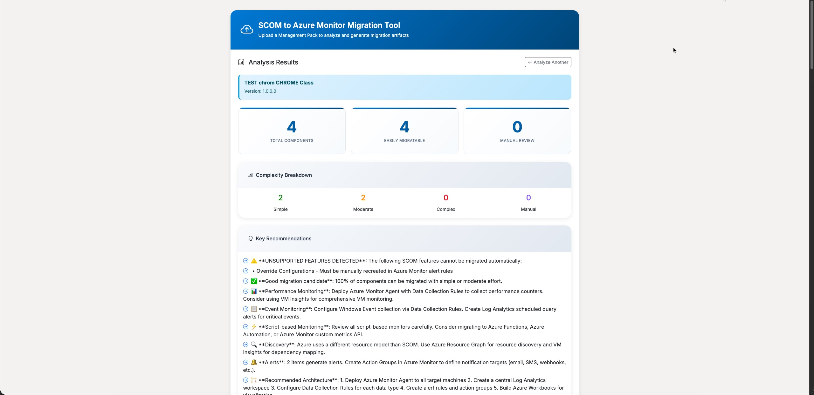

Available Tools
Click on any tool to get started
New

SCOM to Azure Monitor Migration Tool
Automatically analyze your SCOM Management Packs and get detailed migration recommendations for Azure Monitor. Generate ARM templates, KQL queries, and Data Collection Rules.
- Upload & analyze Management Pack XML files
- Get complexity assessment & effort estimates
- Generate ready-to-deploy ARM templates
- Pre-built KQL queries for Log Analytics
- Data Collection Rule configurations
Popular

SCOM Management Pack Builder
Build SCOM Management Packs with an intuitive UI - no XML editing required. Create monitors, rules, discoveries, and more with a visual interface that generates properly formatted MP files.
- Visual UI for MP authoring
- Create monitors, rules & discoveries
- No XML knowledge required
- Export valid Management Pack files
- Built-in validation & testing
Have a tool idea? Let me know!